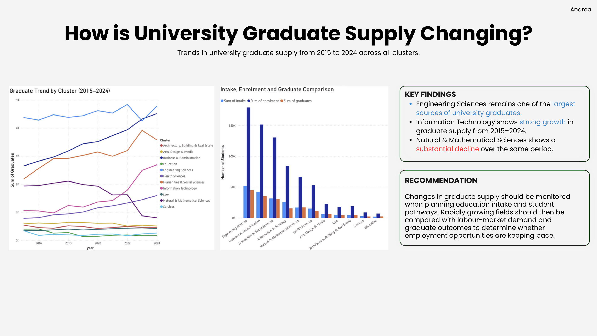
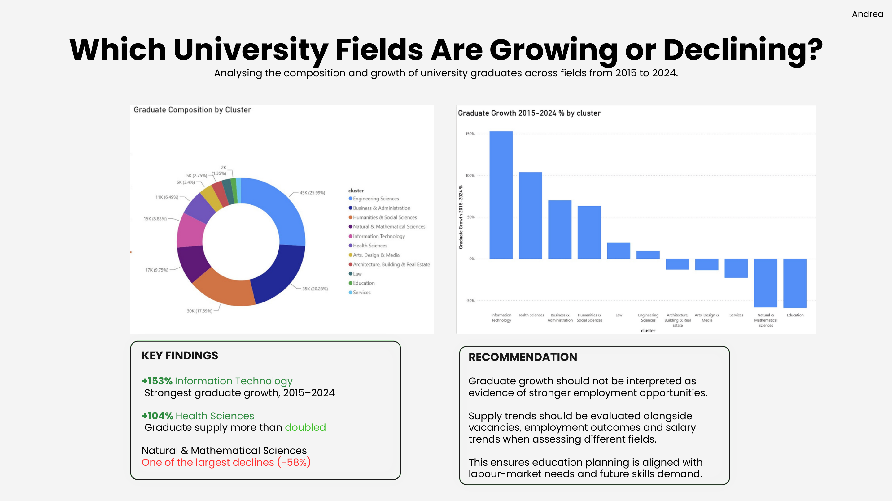

01 / Explore
Review the university dataset, column types, missing values and duplicate records.
DATA ANALYTICS / DATA PREPARATION & VISUALISATION
How have graduate numbers changed in Singapore, and what does that mean for students choosing what to study? In this group project, we explored education pathways and the job market using public datasets. My main focus was university graduate supply from 2015 to 2024.
01 / THE PROJECT
Our team explored whether different post-secondary pathways were associated with different job opportunities and outcomes in Singapore. We looked at university and polytechnic graduate supply, vacancies, employment, salaries and qualification outcomes, using a common analysis window of 2015–2024.
The wider project used seven public datasets. Each group member worked on a different area of the analysis. I was responsible for university graduate supply, and also helped with the team slides and data exploration.
02 / MY CONTRIBUTION
I explored the university supply dataset using Python and pandas, checked missing values and duplicate records, and worked with the team's shared course-cluster categories. Missing numerical observations were kept as unavailable values rather than changing them to zero. This helped avoid misleading totals and comparisons in Power BI.
Review the university dataset, column types, missing values and duplicate records.
Clean and standardise course categories to align with the team's shared clusters.
Build Power BI charts showing trends, intake and enrolment, graduate composition and growth.
03 / POWER BI DASHBOARDS
I created visuals to understand how university graduate supply changed across course clusters. These included graduate trends, an intake–enrolment–graduate comparison, composition by field and growth from 2015 to 2024.


04 / KEY FINDINGS
These are graduate-supply trends from our project findings, not measures of job availability or predictions of future demand.
05 / REFLECTION
This project gave me more experience cleaning real-world data and presenting results in Power BI. I also learned why datasets need consistent labels before they can be compared, and why a rise in graduates does not automatically mean there are more jobs available.
Working as a team helped me see how education data, graduate outcomes and labour demand can contribute different perspectives to the same question.
← Back to all projects